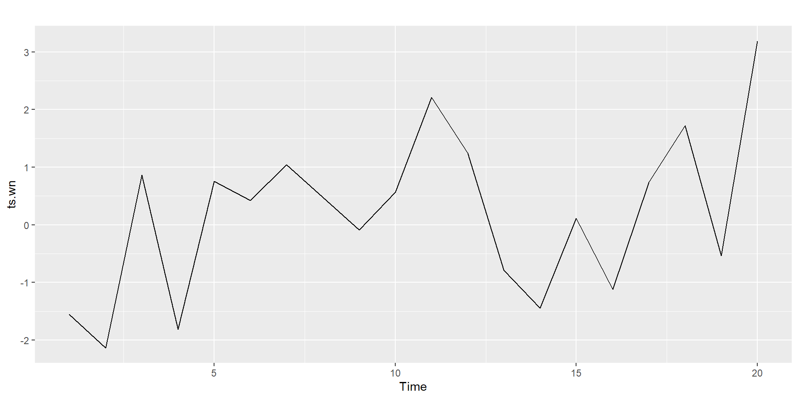
Time Series Analysis
Dr. Thiyanga S. Talagala
Department of Statistics, Faculty of Applied Sciences
University of Sri Jayewardenepura, Sri Lanka
Department of Statistics, Faculty of Applied Sciences
University of Sri Jayewardenepura, Sri Lanka
Identify the features of the time series

ACF plot
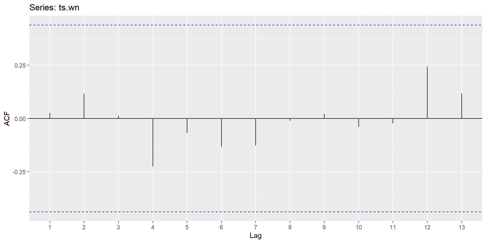
White noise implies stationarity.
Series with trend
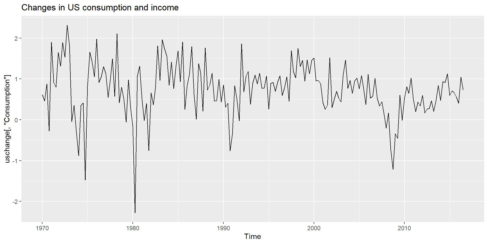
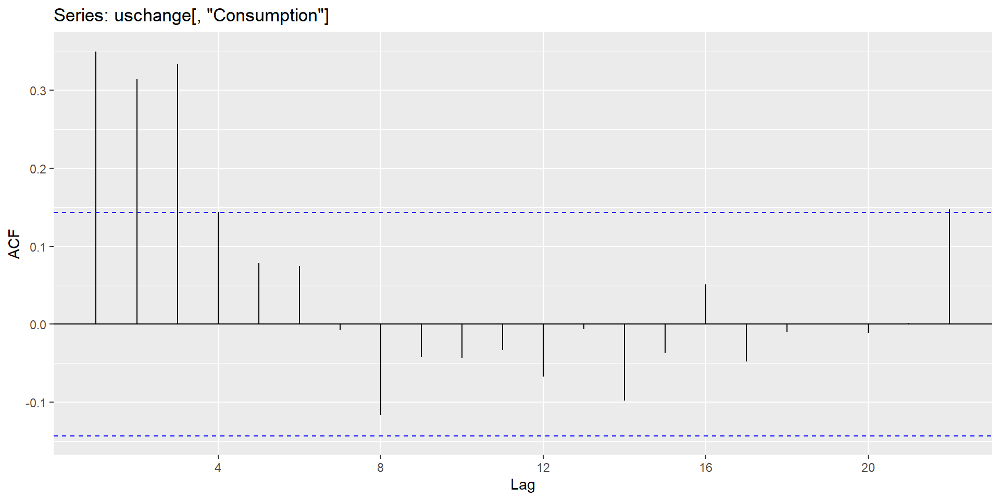
Common trend removal (de-trending) procedures
Deterministic trend: Time-trend regression
The trend can be removed by fitting a deterministic polynomial time trend. The residual series after removing the trend will give us the de-trended series.
Stochastic trend: Differencing
The process is also known as a Difference-stationary process.
Notation: I(d)
Integrated to order \(d\): Series can be made stationary by differencing \(d\) times.
- Known as \(I(d)\) process.
Question: Show that random walk process is an \(I(1)\) process.
The random walk process is called a unit root process. (If one of the roots turns out to be one, then the process is called unit root process.)
Variance stabilization
Eg:
Square root: \(W_t = \sqrt{Y_t}\)
Logarithm: \(W_t = log({Y_t})\)
This very useful.
Interpretable: Changes in a log value are relative (percent) changes on the original sclae.
Monthly Airline Passenger Numbers 1949-1960
Without transformations
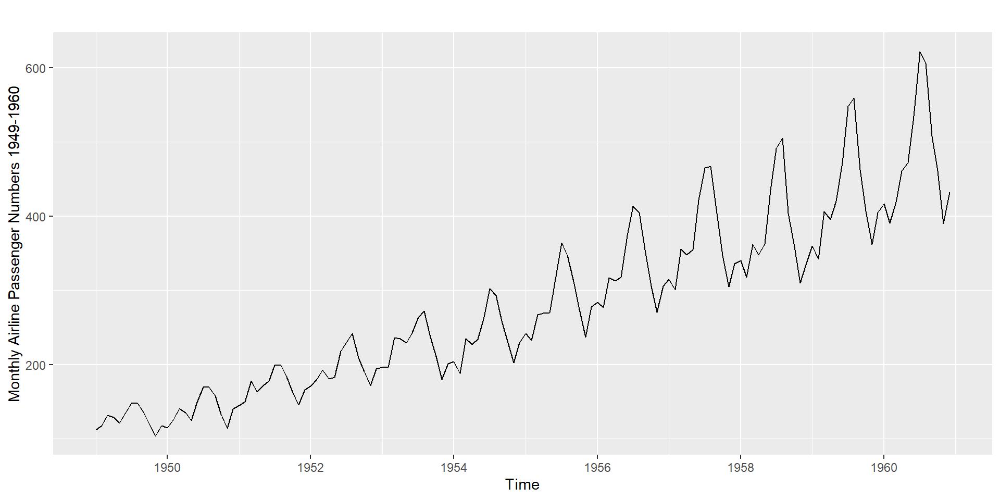Monthly Airline Passenger Numbers 1949-1960
Logarithm transformation
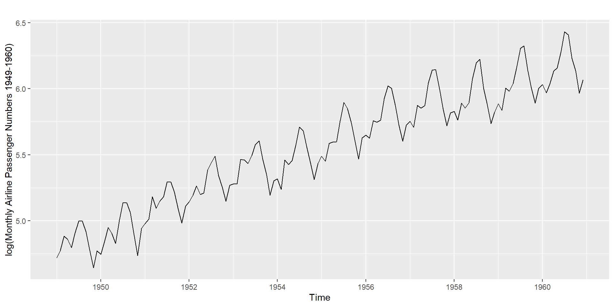Box-Cox transformation
\[ w_t=\begin{cases} log(y_t), & \text{if $\lambda=0$} \newline (Y_t^\lambda - 1)/ \lambda, & \text{otherwise}. \end{cases} \]
Different values of \(\lambda\) gives you different transformations.
\(\lambda=1\): No substantive transformation
\(\lambda = \frac{1}{2}\): Square root plus linear transformation
\(\lambda=0\): Natural logarithm
\(\lambda = -1\): Inverse plus 1
Balance the seasonal fluctuations and random variation across the series.
Transformation often makes little difference to forecasts but has large effects on PI.
Application
snaive + applying BoxCox transformation
Is the snaive method suitable for forecasting the AirPassengers time series?
Steps:
✅ apply Box-Cox transformation.
✅ fit a model.
✅ reverse transformation.
What differences do you notice?
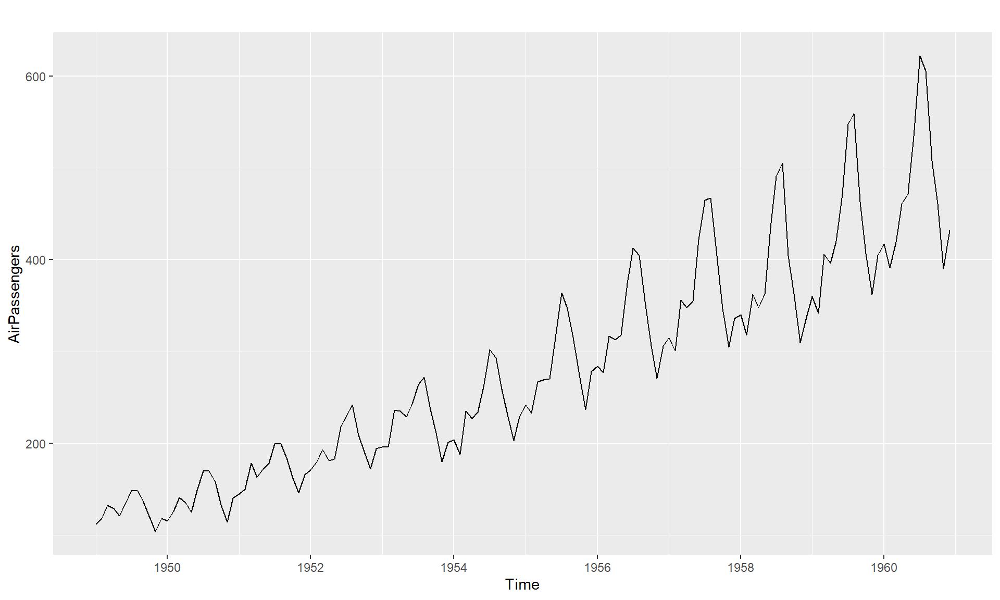
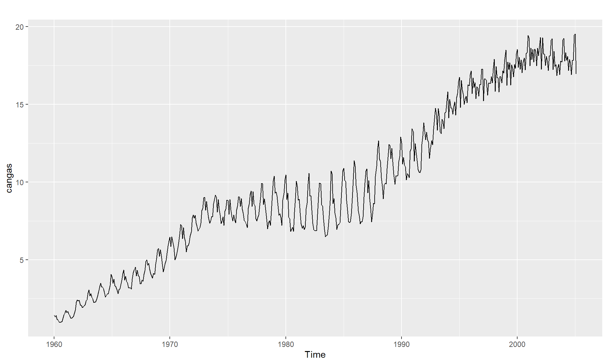
ARMA(p, q) model
\[Y_t=c+\phi_1Y_{t-1}+...+\phi_p Y_{t-p}+ \theta_1\epsilon_{t-1}+...+\theta_q\epsilon_{t-q}+\epsilon_t\]
These are stationary models.
They are only suitable for stationary series.
ARIMA(p, d, q) model
Differencing –> ARMA
Step 1: Differencing
\[Y'_t = (1-B)^dY_t\]
Step 2: ARMA
\[Y'_t=c+\phi_1Y'_{t-1}+...+\phi_p Y'_{t-p}+ \theta_1\epsilon_{t-1}+...+\theta_q\epsilon_{t-q}+\epsilon_t\]
Modelling steps
Plot the data.
Split time series into training, validation (optional), test.
If necessary, transform the data (using a Box-Cox transformation) to stabilise the variance.
If the data are non-stationary, take first differences of the data until the data are stationary.
Examine the ACF/PACF to identify a suitable model.
Try your chosen model(s), and to search for a better model.
Check the residuals from your chosen model by plotting the ACF of the residuals, and doing a portmanteau test of the residuals. If they do not look like white noise, try a modified model.
Once the residuals look like white noise, calculate forecasts.
Step 1: Plot data
Detect unusual observations in the data
Detect non-stationarity by visual inspections of plots
Stationary series:
has a constant mean value and fluctuates around the mean.
constant variance.
no pattern predictable in the long-term.
Step 2: Split time series into training and test sets
Jan Feb Mar Apr May Jun Jul Aug Sep Oct Nov Dec
1949 112 118 132 129 121 135 148 148 136 119 104 118
1950 115 126 141 135 125 149 170 170 158 133 114 140
1951 145 150 178 163 172 178 199 199 184 162 146 166
1952 171 180 193 181 183 218 230 242 209 191 172 194
1953 196 196 236 235 229 243 264 272 237 211 180 201
1954 204 188 235 227 234 264 302 293 259 229 203 229
1955 242 233 267 269 270 315 364 347 312 274 237 278
1956 284 277 317 313 318 374 413 405 355 306 271 306
1957 315 301 356 348 355 422 465 467 404 347 305 336 Jan Feb Mar Apr May Jun Jul Aug Sep Oct Nov Dec
1958 340 318 362 348 363 435 491 505 404 359 310 337
1959 360 342 406 396 420 472 548 559 463 407 362 405
1960 417 391 419 461 472 535 622 606 508 461 390 432Training part
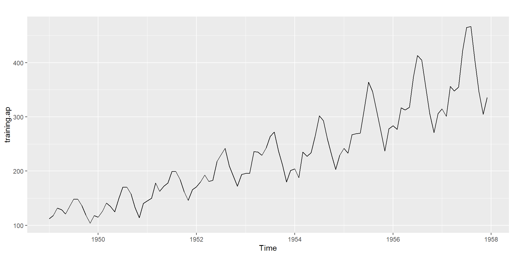Step 3: Apply transformations
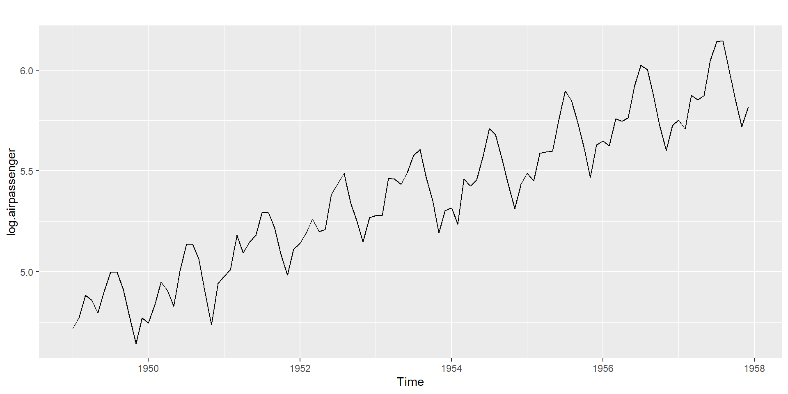Step 4: Take difference series
Identifying non-stationarity by looking at plots
Time series plot
The ACF of stationary data drops to zero relatively quickly.
The ACF of non-stationary data decreases slowly.
For non-stationary data, the value of \(r_1\) is often large and positive.
Non-seasonal differencing and seasonal differencing
Non seasonal first-order differencing: \(Y'_t=Y_t - Y_{t-1}\)
Non seasonal second-order differencing: \(Y''_t=Y'_t - Y'_{t-1}\)
Seasonal differencing: \(Y_t - Y_{t-m}\)
- For monthly, \(m=12\), for quarterly, \(m=4\).
- Seasonally differenced series will have \(T-m\) observations.
There are times differencing once is not enough. However, in practice,it is almost never necessary to go beyond second-order differencing.
Non-Seasonal differencing
Without differencing
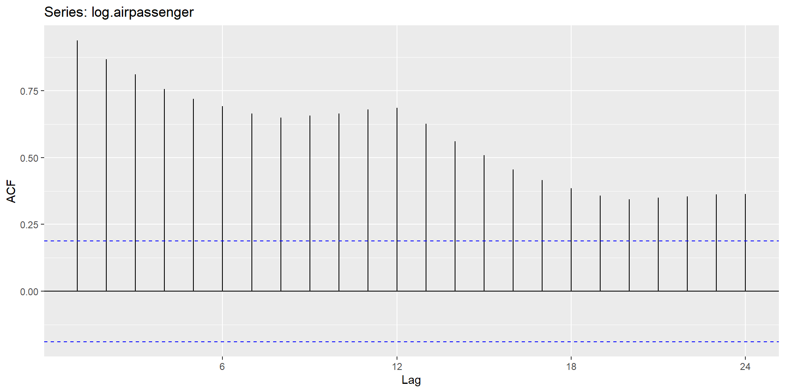
With differencing
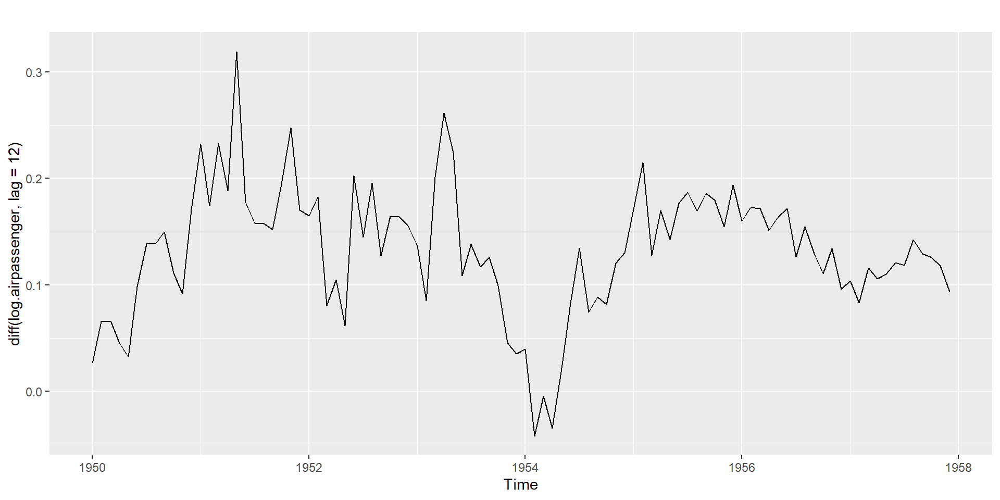
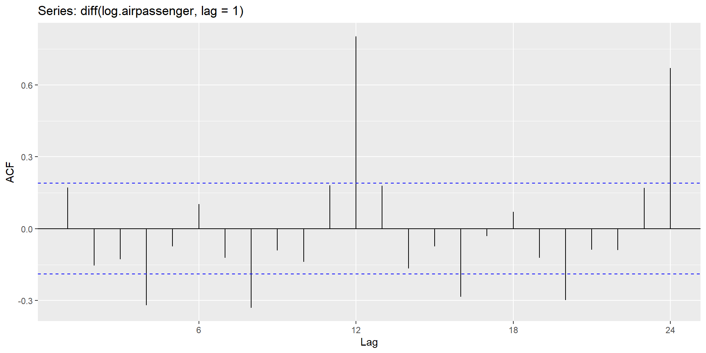
Seasonal differencing
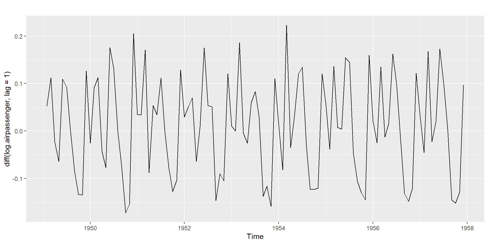
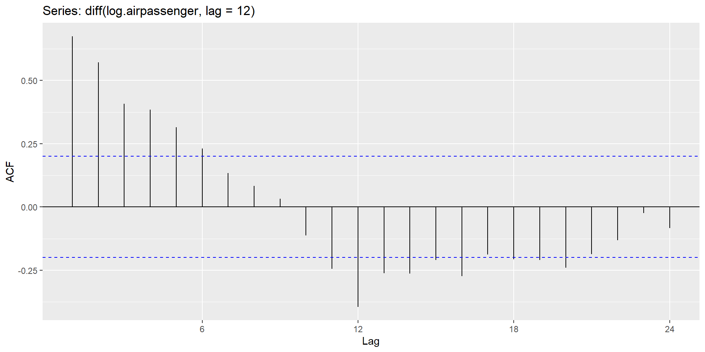
Seasonal differencing + Non-seasonal differencing
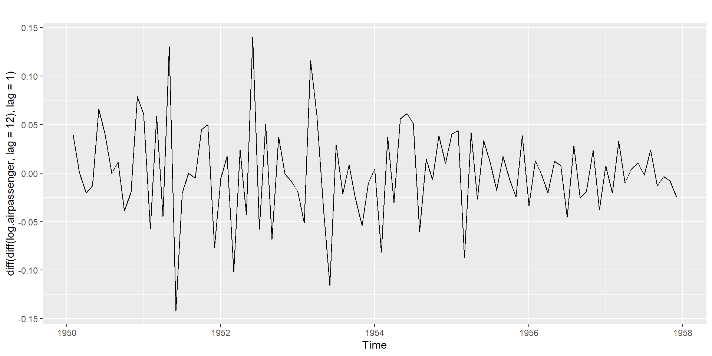
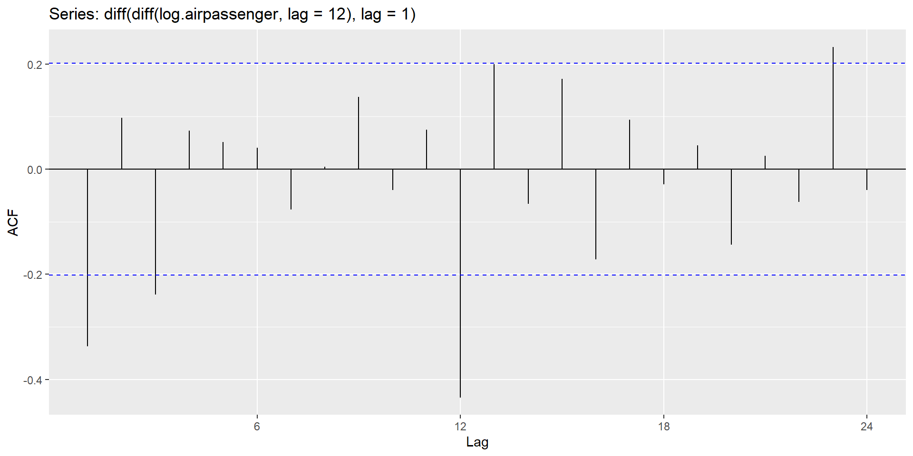
Testing for nonstationarity for the presence of unit roots
Dickey and Fuller (DF) test
Augmented DF test
Phillips and Perron (PP) nonparametric test
Kwiatkowski-Phillips-Schmidt-Shin (KPSS) test
KPSS test
H0: Series is level or trend stationary.
H1: Series is not stationary.
#######################
# KPSS Unit Root Test #
#######################
Test is of type: mu with 3 lags.
Value of test-statistic is: 0.0942
Critical value for a significance level of:
10pct 5pct 2.5pct 1pct
critical values 0.347 0.463 0.574 0.739KPSS test
#######################
# KPSS Unit Root Test #
#######################
Test is of type: mu with 4 lags.
Value of test-statistic is: 2.113
Critical value for a significance level of:
10pct 5pct 2.5pct 1pct
critical values 0.347 0.463 0.574 0.739
#######################
# KPSS Unit Root Test #
#######################
Test is of type: mu with 3 lags.
Value of test-statistic is: 0.1264
Critical value for a significance level of:
10pct 5pct 2.5pct 1pct
critical values 0.347 0.463 0.574 0.739AR(p)
ACF dies out in an exponential or damped sine-wave manner.
there is a significant spike at lag \(p\) in PACF, but none beyond \(p\).
MA(q)
ACF has all zero spikes beyond the \(q^{th}\) spike.
PACF dies out in an exponential or damped sine-wave manner.
Seasonal components
- The seasonal part of an AR or MA model will be seen in the seasonal lags of the PACF and ACF.
::::
ARIMA(0,0,0)(0,0,1)12 will show
a spike at lag 12 in the ACF but no other significant spikes.
The PACF will show exponential decay in the seasonal lags 12, 24, 36, . . . .
ARIMA(0,0,0)(1,0,0)12 will show
exponential decay in the seasonal lags of the ACF.
a single significant spike at lag 12 in the PACF.
::::
ACF
PACF
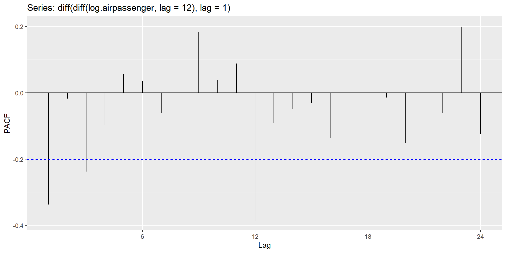Step 5: Examine the ACF/PACF to identify a suitable model
\(d=1\) and \(D=1\) (from step 3)
Significant spike at lag 1 in ACF suggests non-seasonal MA(1) component.
Significant spike at lag 12 in ACF suggests seasonal MA(1) component.
Initial candidate model: \(ARIMA(0,1,1)(0,1,1)_{12}\).
By analogous logic applied to the PACF, we could also have started with \(ARIMA(1,1,0)(1,1,0)_{12}\).
Let’s try both
Initial model:
\(ARIMA(0,1,1)(0,1,1)_{12}\)
\(ARIMA(1,1,0)(1,1,0)_{12}\)
Try some variations of the initial model:
\(ARIMA(0,1,1)(1,1,1)_{12}\)
\(ARIMA(1,1,1)(1,1,0)_{12}\)
\(ARIMA(1,1,1)(1,1,1)_{12}\)
Both the ACF and PACF show significant spikes at lag 3, and almost significant spikes at lag 3, indicating that some additional non-seasonal terms need to be included in the model.
\(ARIMA(3,1,1)(1,1,1)_{12}\)
\(ARIMA(1,1,3)(1,1,1)_{12}\)
\(ARIMA(3,1,3)(1,1,1)_{12}\)
AICc
Initial model: AICc
\(ARIMA(0,1,1)(0,1,1)_{12}\): -344.33 (the smallest AICc)
\(ARIMA(1,1,0)(1,1,0)_{12}\): -336.32
Try some variations of the initial model:
\(ARIMA(0,1,1)(1,1,1)_{12}\): -342.3 (second smallest AICc)
\(ARIMA(1,1,1)(1,1,0)_{12}\): -336.08
\(ARIMA(1,1,1)(1,1,1)_{12}\): -340.74
\(ARIMA(3,1,1)(1,1,1)_{12}\): -338.89
\(ARIMA(1,1,3)(1,1,1)_{12}\): -339.42
\(ARIMA(3,1,3)(1,1,1)_{12}\): -335.65
Step 7: Residual diagnostics
Fitted values:
\(\hat{Y}_{t|t-1}\): Forecast of \(Y_t\) based on observations \(Y_1,...Y_t\).
Residuals
\[e_t=Y_t - \hat{Y}_{t|t-1}\]
Assumptions of residuals
- \(\{e_t\}\) uncorrelated. If they aren’t, then information left in residuals that should be used in computing forecasts.
- \(\{e_t\}\) have mean zero. If they don’t, then forecasts are biased.
Useful properties (for prediction intervals)
\(\{e_t\}\) have constant variance.
\(\{e_t\}\) are normally distributed.
Step 7: Residual diagnostics (cont.)
H0: Data are not serially correlated.
H1: Data are serially correlated.
Ljung-Box test
data: Residuals from ARIMA(0,1,1)(0,1,1)[12]
Q* = 14.495, df = 20, p-value = 0.8045
Model df: 2. Total lags used: 22Step 7: Residual diagnostics (cont.)
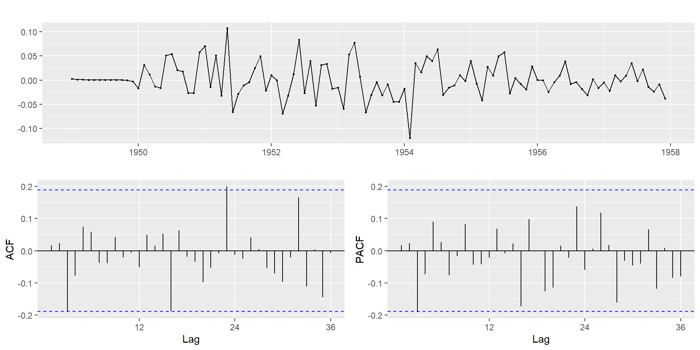Step 7: Residual diagnostics (cont.)
Ljung-Box test
data: Residuals from ARIMA(0,1,1)(1,1,1)[12]
Q* = 13.971, df = 19, p-value = 0.7854
Model df: 3. Total lags used: 22Step 7: Residual diagnostics (cont.)
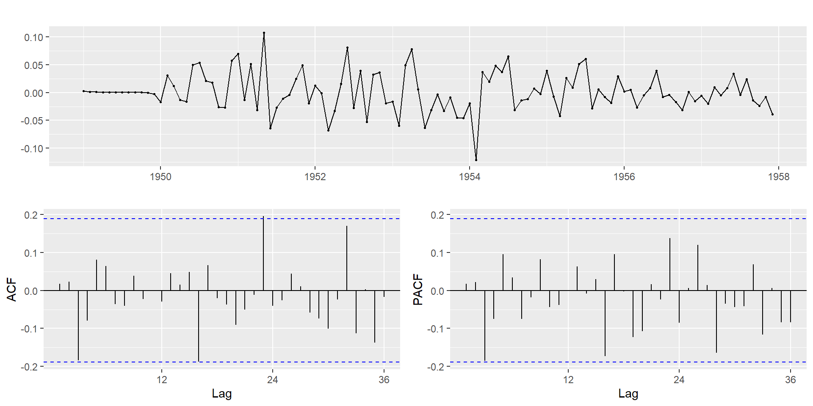Step 8: Calculate forecasts
\(ARIMA(0,1,1)(0,1,1)_{12}\)
\(ARIMA(0,1,1)(1,1,1)_{12}\)
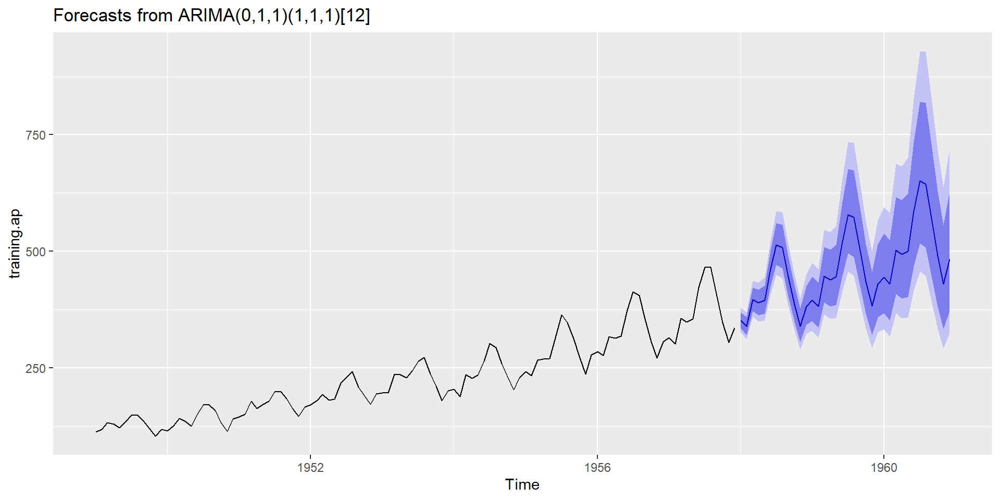\(ARIMA(0,1,1)(0,1,1)_{12}\)
Jan Feb Mar Apr May Jun Jul Aug
1958 350.6592 339.1766 396.7654 389.3934 394.7295 460.6986 512.2818 507.5185
1959 394.8025 381.8745 446.7129 438.4129 444.4207 518.6945 576.7713 571.4083
1960 444.5029 429.9474 502.9482 493.6032 500.3674 583.9912 649.3792 643.3411
Sep Oct Nov Dec
1958 445.0042 386.2473 339.3564 381.5803
1959 501.0243 434.8708 382.0769 429.6162
1960 564.0966 489.6152 430.1753 483.6992\(ARIMA(0,1,1)(1,1,1)_{12}\)
Jan Feb Mar Apr May Jun Jul Aug
1958 351.0115 339.0589 396.3161 389.4484 395.0305 461.6590 513.6099 507.9900
1959 395.2760 381.5215 446.3245 438.4261 444.8906 520.5608 578.7432 573.0358
1960 444.7886 429.3347 502.2289 493.3544 500.6143 585.7116 651.2077 644.7354
Sep Oct Nov Dec
1958 445.3297 386.3269 339.4872 381.8812
1959 501.8766 435.0725 382.3290 429.4328
1960 564.7108 489.5677 430.2174 483.2724Step 9: Evaluate forecast accuracy
How well our model is doing for out-of-sample?
Forecast error = True value - Observed value
\[e_{T+h}=Y_{T+h}-\hat{Y}_{T+h|T}\]
Where,
\(Y_{T+h}\): \((T+h)^{th}\) observation, \(h=1,..., H\)
\(\hat{Y}_{T+h|T}\): Forecast based on data uo to time \(T\).
True forecast error as the test data is not used in computing \(\hat{Y}_{T+h|T}\).
Unlike, residuals, forecast errors on the test set involve multi-step forecasts.
Use forecast error measures to evaluate the models.
Step 9: Evaluate forecast accuracy
\(ARIMA(0,1,1)(0,1,1)_{12}\)
ME RMSE MAE MPE MAPE ACF1 Theil's U
Test set -33.71566 36.559 33.71566 -8.112567 8.112567 0.08524612 0.7974916\(ARIMA(0,1,1)(1,1,1)_{12}\)
ME RMSE MAE MPE MAPE ACF1 Theil's U
Test set -34.12174 36.87661 34.12174 -8.190874 8.190874 0.06782644 0.8019226\(ARIMA(0,1,1)(0,1,1)_{12}\) MAE, MAPE is smaller than \(ARIMA(0,1,1)(1,1,1)_{12}\). Hence, we select \(ARIMA(0,1,1)(0,1,1)_{12}\) to forecast future values.